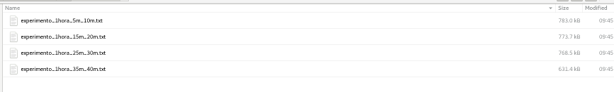
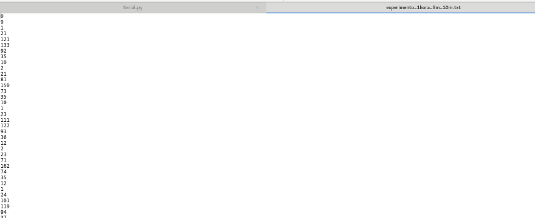
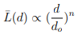
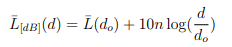

CAMPUS CAMPINA GRANDE
Disciplina: Redes sem Fio
Professor: Ruan Delgado Gomes
Alunos: Pedro Henrique Tomé do Nascimento e Ronycley Gonçalves Agra
RELATÓRIO - MEDIÇÃO DE PERDA DE POTÊNCIA PARA DISTÂNCIAS VARIADAS
Neste trabalho vamos analisar a perda de potência para distâncias diferentes em um enlace de dispositivos
que realizam comunicam sem fio utilizando protocolo 802.15.4.
2. EQUIPAMENTOS E SISTEMAS UTILIZADOS
Os equipamentos utilizados foram os seguintes:
- 2 placas MiWi Comm Demo - 2.4 GHz MRF24J40, da fabricante Microship
- 1 modulo tranceiver RF MRF24J40MA - 2.4 GHz IEEE Std. 802.15.4
- Computador desktop com sistema operacional Ubuntu 18.4 e ambiente python instalado
3. CARACTERIZAÇÃO DO AMBIENTE
O ambiente utilizado nas mediçoes foi a area interna do predio da Agencia Sebrae Campina Grande, Localizado na Av.
Consul Joseph Noujaim Habib, 800, bairro do Catole.
No local ha varios tipos de materiais e divisoes, como madeira, aluminio, vidro e plastico. Utilizamos o corredor
central do predio para posicionar os modulos, conforme imagem abaixo:
 Figura 1
Figura 1
4. PROCEDIMENTOS UTILIZADOS
Conforme orientaçao do professor Ruan, a sequencia de procedimentos abaixo foi executada:
4.1 - Montagem e configuracao dos equipamentos
Montamos o modulo tranceiver e posicionamos os modulos transmissores inicialmente a 5 e 10 metros, conforme a figura 1.
Em seguinda configuramos a conexao serial entre o tranceiver e o computador e identificamos o dispositivo gerado na
pasta
/dev , no caso, '/dev/serial/by-id/usb-FTDI_FT232R_USB_UART_AI03GNWF-if00-port0'.
Apos ligarmos os modulos, executamos o script Serial.py, no perido de 1 hora, para a coleta de dados de
transmissao na distancias de 5 e 10 metros,
15 e 20 metros, 25 e 30 metros e 35 e 40 metros:
 Figura 2
Figura 2
A saida do script foi direcionada para os arquivos correspondentes as distancias:

Figura 3
Abaixo segue o print de parte do conteudo do arquivo correspondente a distancia de 5 e 10 metros:

Figura 4
4.3 - Processamento dos dados coletados
Em seguida, processamos os dados coletados e os distribuimos em arquivos, especificando distancia e canal:
 Figura 5
Figura 5
 Figura 6
Figura 6
4.4 - Calculo da media de potencia por distancia e canal
No passo seguinte, executamos o programa Calculamedia.py para o calcularmos a media da potencia recebida,
referente a cada canal e nas distancias utilizadas.
Para automatizar o processo, utilizamos o script media_canal_distancia.sh, que agrupa as medias por canal para
cada distancia:
 Figura 7
Figura 7
 Figura 8
Figura 8
 Figura 9
Figura 9
 Figura 10 (media da potencia recebida para cada distancia pelo canal 11)
Figura 10 (media da potencia recebida para cada distancia pelo canal 11)
4.5 - Geraçao dos graficos do decaimento de potencia
Em seguida utilizamos scripts PHP e a biblioteca Google Charts para gerar o grafico da media da potencia recibida por
canal e distancia.
Os codigos-fonte estao disponiveis em um repositorio GIT cujo link esta no final deste relatorio
 Figura 11
Figura 11
5. MEDIÇÕES POR CANAL E DISTÂNCIA
Segue abaixo a area de visualizacao do grafico de decaimento de potencia registrado para cada distancia e atraves de
cada canal:
6. CALCULO DO EXPOENTE DE PERDAS POR CANAL E DISTÂNCIA
Os modelos de propagação baseados em medidas e os modelos teóricos indicam que a
potência do sinal recebido, em um percurso de larga e média escala, para uma separação
arbitrária transmissor (Tx) - receptor (Rx), decresce logaritmicamente com a distância.
A perda de percurso pode ser então expressa por:

Ou ainda, em dB:

Tomando por base as equacoes acima, definimos a distancia de referencia (d0) em 1 metro e calculamos
a media da potencia recebida para essa distancia L(d0) para cada canal.
Segue a tabela com os valores encontrados:
| Canal |
L(d0) |
| 11 |
-53.0186144734 |
| 12 |
-53.5038524791 |
| 13 |
-54.8467038967 |
| 14 |
-55.2136308591 |
| 15 |
-54.0462873246 |
| 16 |
-54.5502614666 |
| 17 |
-55.3291517052 |
| 18 |
-56.5019675832 |
| 19 |
-56.9933150459 |
| 20 |
-58.1356772799 |
| 21 |
-58.7225856701 |
| 22 |
-59.0868392854 |
| 23 |
-61.4738612423 |
| 24 |
-66.1563502682 |
| 25 |
-65.5535987824 |
| 26 |
-60.670792223 |
calculamos o expoente de perda para cada distancia
e canal e plotamos nos seguintes graficos:
http://w3.ufsm.br/natanael/ComMoveisUFSM/telcelular10.pdf
https://br.mouser.com/new/microchip/microchipdm1820151/
http://ww1.microchip.com/downloads/en/devicedoc/70329b.pdf
https://github.com/ronycleygagra/rsf